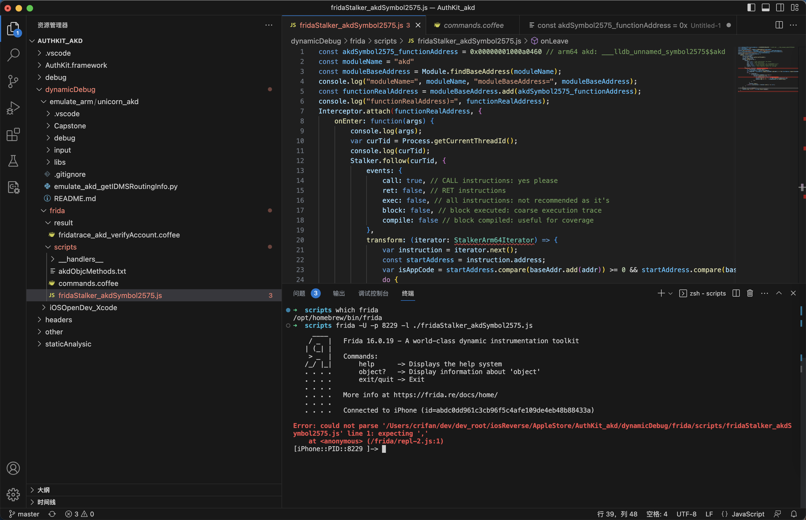

js
此处整理Frida中js的一些经验心得。
常见错误
RangeError: invalid array index
- 错误：Frida的hook脚本js中
Interceptor.attach(functionRealAddress, { onEnter: function(args) { console.log(args);- 会报错：
RangeError: invalid array index
- 会报错：
- 原因：无法知道准确的
args的数组的大小，无法直接打印，所以报错 - 解决办法：不去直接打印，而改为去获取对应的前几个参数（前提：已知参数个数），再去打印：
Interceptor.attach(functionRealAddress, { onEnter: function(args) { var arg0 = args[0] var arg1 = args[1] var arg2 = args[2] console.log("arg0=" + arg0 + ", arg1=" + arg1 + ", arg2=" + arg2);- 进一步优化：甚至是，计算出此处的ObjC的参数的个数，循环批量打印所有参数
- 具体详见：ObjC的参数 · 逆向调试利器：Frida中的
计算ObjC的函数的真正参数的个数 + 打印全部参数
- 具体详见：ObjC的参数 · 逆向调试利器：Frida中的
- 进一步优化：甚至是，计算出此处的ObjC的参数的个数，循环批量打印所有参数
Frida对于js支持的不够好
Frida对于js支持的不够好，不够完美：
- js报错时，代码错误行数指示有误
- console.log的参数格式化不支持
- putCallout中传递有名的独立函数会导致崩溃，改为匿名函数即可
下面详细解释：
js报错时，代码错误行数指示有误
- 问题：
Frida的js代码文件中，参考别人的ts的代码，写了：
transform: (iterator: StalkerArm64Iterator) => {
...
var arm64Context = ctx as Arm64CpuContext;
结果语法报错
Error: could not parse ‘xxxf/ridaStalker_akdSymbol2575.js' line 1: expecting ','
at <anonymous> (/frida/repl-2.js:1)

- 解决过程
- Frida中对js代码报错，始终是第一行代码有问题
- 后来是，花了很长时间和精力，才定位到真正问题：
- 原因：js代码中，后面的某2行中，先后出现的2个变量，没有定义
- 2个变量是：
StalkerArm64Iterator和Arm64CpuContext - 导致的整体js代码无法运行而报错
- 2个变量是：
- 解决办法：注释掉2个未定义的变量（
StalkerArm64Iterator和Arm64CpuContext） - 心得：
- 总之说明，js代码的解析，是Frida整个框架去基于js引擎（v8或其他？）去解析的
- 所以最终输出的报错信息，不够友好，导致容易让人误判错误原因，从而增加解决问题的难度
putCallout中传递有名的独立函数会导致崩溃
- 问题概述
- 给putCallout传递函数：
- 传递有名的独立的函数：会导致崩溃
- 传递匿名的函数：就可以正常运行
- 给putCallout传递函数：
- 详解
Frida的Stalker的transform中去写putCallout代码
注：完整代码详见：___lldb_unnamed_symbol2575$$akd · Frida逆向实例和工具函数
如果把putCallout写成是传入一个独立的js函数：
transform: function (iterator) {
...
if (curOffsetInt == 8516) {
iterator.putCallout(needDebug);
}
}
...
function needDebug (context) {
console.log("into needDebug: context=" + context);
...
}
->就会导致此处出现崩溃：
。。。
Process terminated
Thank you for using Frida!
Fatal Python error: _enter_buffered_busy: could not acquire lock for <_io.BufferedReader name='<stdin>'> at interpreter shutdown, possibly due to daemon threads
Python runtime state: finalizing (tstate=0x000000010308e0c8)
Current thread 0x00000001f4ab4140 (most recent call first):
<no Python frame>
而如果改为：js匿名名函数
transform: function (iterator) {
...
if (curOffsetInt == 8516) {
// iterator.putCallout(needDebug);
iterator.putCallout((context) => {
console.log("into needDebug: context=" + context);
});
}
}
就不会崩溃
很是诡异。暂时不清楚具体原因。
- 心得：Frida中对于js的支持，还是不够完善
- 容易遇到一些诡异的bug
console.log的参数格式化不支持
详见后续章节：console.log日志